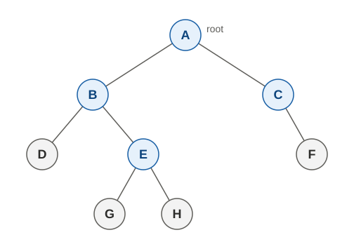
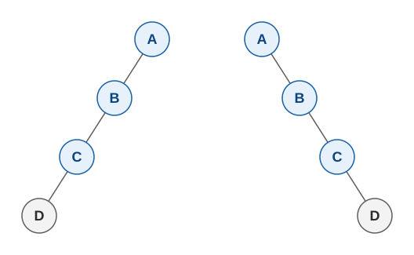
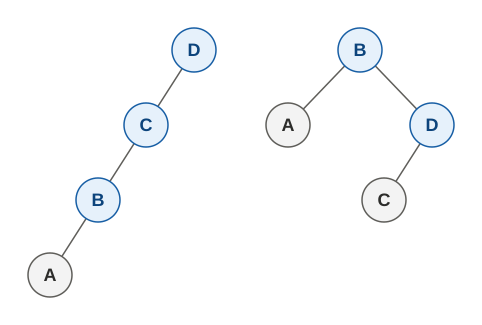

要在一棵樹上走訪(traverse)時，可以有很多種不同的方式，但主要的方式有以下四種：
- 前序(pre-order)：先處理自己，再處理左子樹，再處理右子樹，即以「中左右」的順序處理。
- 中序(in-order)：先處理左子樹，再處理自己，再處理右子樹，即以「左中右」的順序處理。
- 後序(post-order)：先處理左子樹，再處理右子樹，再處理自己，即以「左右中」的順序處理。
- 層序(level-order)：先處理深度 0 的節點，再處理深度 1 的節點，再處理深度 2 的節點，...，直到所有節點都被處理過。
以基礎介紹看過的這棵樹來說，

四種走訪的順序分別如下：
- Pre-order: A B D E G H C F
- In-roder: D B G E H A C F
- Post-roder: D G H E B F C A
- Level-roder: A B C D E F G H
而在實作上，前、中、後序三種走訪會靠遞迴來實作，而層序則需要用 queue 來實作，如下：
class TreeNode(object): def __init__(self, val, left=None, right=None): self.val = val self.left = left self.right = right def pre_order(root): if root: print(root.val, end=' ') pre_order(root.left) pre_order(root.right) def in_order(root): if root: in_order(root.left) print(root.val, end=' ') in_order(root.right) def post_order(root): if root: post_order(root.left) post_order(root.right) print(root.val, end=' ') def level_order(root): q = [root] while q: node = q.pop(0) print(node.val, end=' ') if node.left: q.append(node.left) if node.right: q.append(node.right) # Construct root = TreeNode('A') b = TreeNode('B') c = TreeNode('C') d = TreeNode('D') e = TreeNode('E') f = TreeNode('F') g = TreeNode('G') h = TreeNode('H') root.left = b root.right = c b.left = d b.right = e e.left = g e.right = h c.right = f pre_order(root) print() in_order(root) print() post_order(root) print() level_order(root) print()反過來說，如果只知道前、中、後序三種走訪順序的其中幾種，那是否可以還原出唯一的樹來呢？很顯然的，如果只知道其中一種順序時，除非像是運算樹那樣，可以透過節點內容來認出誰是葉子，否則是無法還原出唯一的樹的。例如下面這兩棵樹的前序走訪，都是 A B C D：

下面這兩棵樹的中序走訪，則都也是 A B C D：

只知道後序走訪為 A B C D 時的狀況，在此先留給各位自行練習。而對於同時知道兩種走訪順序的狀況，如果它們是前序和後序走訪，則也無法保證還原，例如前面那一組兩棵的 left-skewed tree 和 right-skewed tree，其前序走訪都是 A B C D，而後序走訪都是 D C B A。